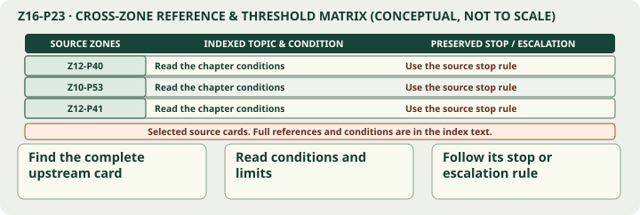

Z16-P23 · Field reference atlas · New manuscript
Mountain, Avalanche, Altitude (HAPE, HACE) and Slope-Failure Index
Locate the original encyclopedia cards for mountain, Avalanche, Altitude (HAPE, HACE) and Slope-Failure Index.
When it applies · Offline reference lookup. The linked chapter defines the situation, audience and limits.
Equipment · Offline reader or the complete linked source cards in print.

Actions
- Open Z12-P40 for recognize life-threatening HAPE and HACE and descend immediately; Z10-P53 for execute assisted descent and rescue for life-threatening HAPE and HACE.[A10, X09]
- Open Z12-P41 for identify avalanche start zones, wind-loaded slopes, cornices and valley runouts; Z12-P44 for recognize post-wildfire burn-scar debris flows and landslide warnings.[A10, E23, X11]
- Read the linked card’s applicability, equipment and stop conditions together. Keep review and source limitations attached to any excerpt.[A10, ED]
Failure recognition · Acting on a keyword or title while overlooking an upstream exception or stop condition.[A10, ED]
Verify · Confirm the exact page ID and read the full conditions before using the reference.[A10, ED]
Stop or change course · If the situation falls outside a linked card’s conditions or its stop rule applies, stop using this index as a decision aid. Follow the full card and current local directions.[A10, ED]
Evidence and editorial notes
- A10 · FEMA / Ready.gov · Make a Plan (current web edition)
- Section: Offline reader navigation, historical lineage, and HOLD transparency · Conditions: Using the complete 16-zone offline archive, zone readers, and print proofs
Support: Navigation aids expose draft status, reconstruction lineage, open diagnostic photo needs, and pending specialist holds on every lookup path.
Limitations: This index entry does not independently establish any safety, regulatory or diagnostic instruction. · Conflicting evidence: None noted.
Editorial note: Index design and cross-reference policy. Substantive directions come from linked upstream chapter claims. · Specialist reviewer: Accessibility, print QA, and editorial reviewer
Primary source · checked 2026-11-24 - E23 · National Avalanche Center / USFS · Avalanche Encyclopedia (current web edition)
- Section: Avalanche Encyclopedia > Terrain, Slopes, and Runout Zones · Conditions: Winter travel and camping in snowy sloped or mountain terrain
Support: Avalanches can initiate on slopes roughly 30 to 45 degrees and travel far into flatter runout zones below; avoid camping beneath steep snow slopes, cornices, or gullies without formal avalanche training and current forecasts.
Limitations: Gentle flat valley floors can still sit inside runout paths beneath steeper upper slopes. · Conflicting evidence: None; strictly excludes unvalidated snow-shelter placement in avalanche terrain.
Editorial note: Enforces avalanche-terrain exclusion on all winter shelter cards. · Specialist reviewer: Avalanche safety and winter shelter
Primary source · checked 2026-11-24 - X09 · CDC · Travel to High Altitudes (current web edition)
- Section: Travel to High Altitudes > Acclimatization, AMS, HAPE and HACE · Conditions: Mountain travel above ~8,000 feet (2,500 meters)
Support: Ascend gradually to acclimatize; recognize Acute Mountain Sickness (headache, nausea, fatigue) and life-threatening HAPE (shortness of breath at rest, cough) or HACE (ataxia, confusion), for which immediate descent and medical care are essential.
Limitations: Physical fitness does not prevent altitude illness; individual susceptibility varies unpredictably. · Conflicting evidence: None; aligns with NPS-MTN.
Editorial note: Core physiological evidence for Z12 mountain-altitude cards. · Specialist reviewer: Mountain medicine and high-altitude safety
Primary source · checked 2026-11-24 - X11 · FEMA / Ready.gov · Landslides and Debris Flow (current web edition)
- Section: Landslides and Debris Flow > Warning Signs and Burn Scars · Conditions: Steep slopes, recent wildfire burn scars and saturated mountain/coastal terrain
Support: Heavy rainfall on steep terrain or wildfire burn scars triggers fast-moving debris flows; watch for rumbling, tilting trees, sudden muddy stream surges or new ground cracks and evacuate perpendicular/uphill away from valleys immediately.
Limitations: Debris flows travel faster than a person can run and recur in previously scarred drainages. · Conflicting evidence: None; pairs with E04 and E17.
Editorial note: Supports mountain/burn-scar landslide and debris-flow hazard cards. · Specialist reviewer: Geological hazard and emergency management
Primary source · checked 2026-11-24
Source lineage · New manuscript (Z16 P20 hazard index) · Classification · New manuscript.